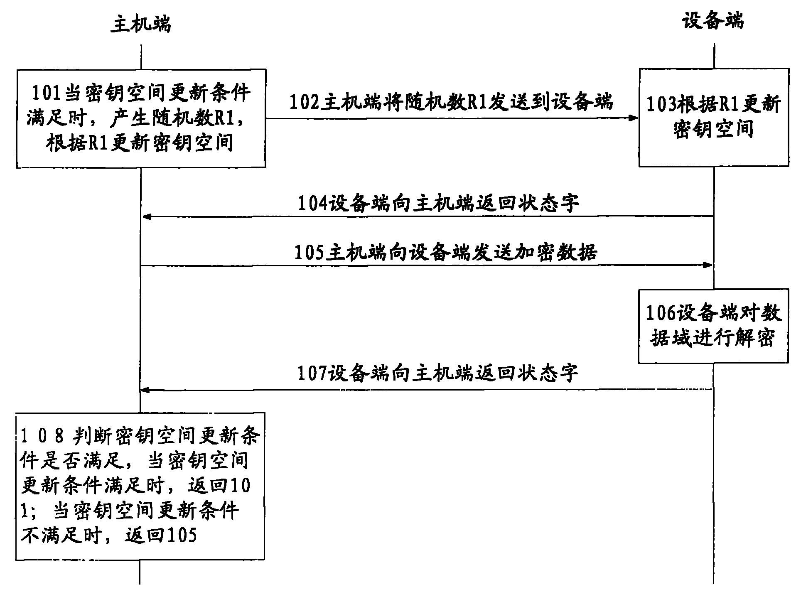

发明名称--一种数据加密传输方法及装置
| 申请号 | CN200910086571.0 | 申请日 | 2009.06.09 | ||
| 公开（公告）号 | CN101572601A | 公开（公告）日 | 2009.11.04 | ||
| IPC分类号 | H04L9/28; H04L9/08 | 申请（专利权）人 | 普天信息技术研究院有限公司; | ||
| 发明人 | 曹会扬;张海英;廖剑;姜涌; | 优先权号 |
摘要:
本发明提出了一种数据加密传输方法，在数据传输的双方均设置密钥空间和安全算法空间，并且分别为密钥空间、安全算法空间、安全算法设置更新条件。在数据传输时，分别从密钥空间和安全算法空间抽取当前数据传输的密钥和安全算法，利用密钥和安全算法将明文数据加密后进行传输。当对应更新条件满足时，同步更新数据传输双方的更新密钥空间、安全算法空间或安全算法。本发明还提出了一种数据加密传输装置，采用本发明的数据加密传输方法和装置，数据传输中使用的密钥和安全算法动态更新，不确定性增大，增强了数据传输的安全性。并且本发明提出的密钥空间、安全算法空间和安全算法更新方法无需复杂运算，简单易行。
摘要附图:
